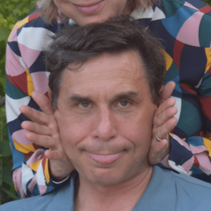

About
CHABON ARCHITECTS was founded in 1999. The firm specializes in high-end residential architecture and fine institutional/commercial projects throughout the United States and the Bahamas. We have proudly collaborated with the greatest interior decorators in the world including Rose Tarlow, Jacques Grange, Ellie Cullman, Thierry Despont, and Mica Ertegun. Our work is based on the principle that architecture must evoke a strong sense of permanence. Therefore, its form must not be generated arbitrarily; rather, it must be derived from its architectural, historical, and social context with our clients’ visions and aspirations guiding our way. Ultimately, that form serves as the means by which space, volume, and composition are perfected. For Chabon Architects design is the process of discovering the inherent reality of what does not yet exist.

Meet the Team
ARTHUR D. CHABON
AIA | Principal
Prior to starting his own firm, Mr. Chabon was an Associate Partner at Robert A.M. Stern Architects. Over thirteen years he designed and managed numerous residential projects. Upon founding Chabon Architects, he, in association with Hart Freeland Roberts and Robert A.M. Stern, worked on the development of interior architecture for the Nashville Public Library. In addition to extensive experience in high-end residential architecture and the design of custom furniture, Arthur Chabon participated in the development of corporate identity systems and signage programs for Bankboston, Cargill AGHorizons and Conoco. Mr. Chabon received a BFA in sculpture from Rhode Island School of Design in 1983 and a Master of Architecture from Columbia University in 1986.
LINDA FACCI
Office Manager
KRISTIN ZIEGLER
AIA | LEED AP
KIN MING HUANG
Associate
MATTHEW PAUL CAIRO
Senior Architect
ADRIENNE MERHEB
Senior Architect
JOEY ZHOU
ADAM CASTIGLIONE